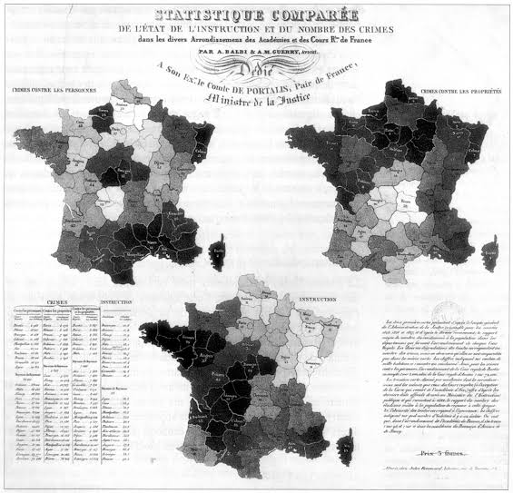
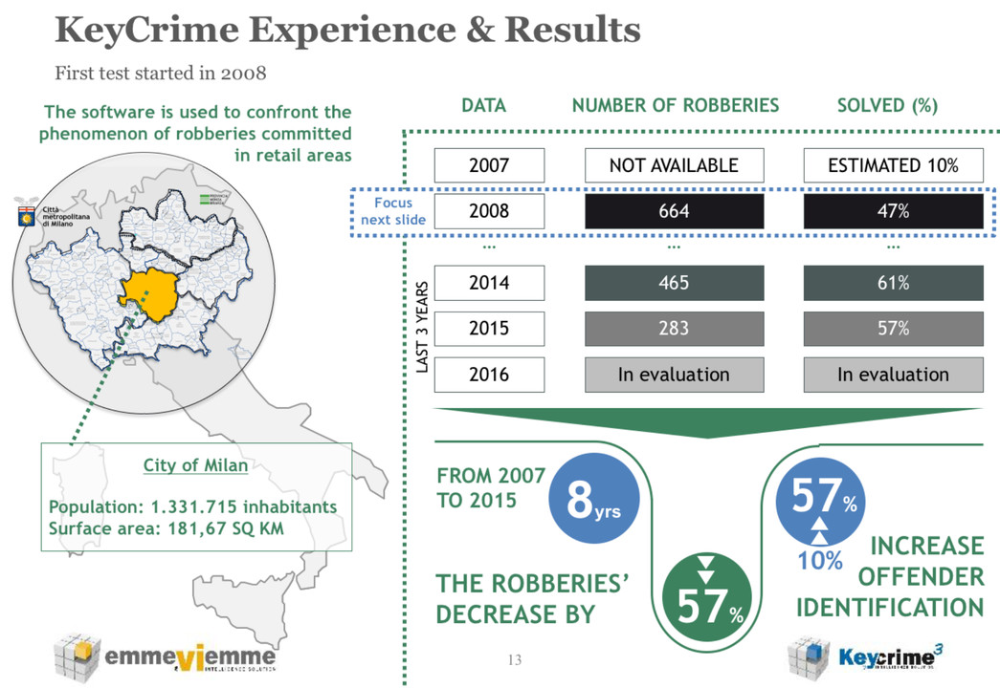

Siglo XIX y el nacimiento de la cartografía del crimen
Escuela Positivista y los primeros mapas del crimen.
- En el siglo XIX, los criminólogos comenzaron a interesarse en el análisis espacial del delito, influenciados por la estadística y la sociología.
- André-Michel Guerry (1833) y Adolphe Quetelet (1835) fueron pioneros en el uso de datos estadísticos para estudiar la criminalidad en Francia y Bélgica.
- Sus mapas mostraban la distribución de delitos como homicidios y robos, revelando patrones relacionados con factores sociales y económicos.
Mapa de John Snow y el vínculo con la criminología (1854)
- Aunque no era criminólogo, John Snow utilizó mapas para identificar la relación entre el cólera y las fuentes de agua en Londres.
- Su método inspiró posteriormente la cartografía del delito, demostrando cómo el análisis geoespacial podía identificar la concentración de problemas urbanos, incluyendo el crimen.
Siglo XX: Avances en el análisis espacial del crimen
Escuela de Chicago y la criminología ambiental (1920-1950)
- Investigadores como Clifford Shaw y Henry McKay estudiaron la distribución de la delincuencia en Chicago.
- Crearon mapas que mostraban cómo el crimen estaba concentrado en ciertas áreas urbanas, especialmente en barrios en deterioro y zonas de inmigrantes.
- Nació la teoría de la desorganización social, que relaciona la criminalidad con la estructura de las ciudades.
Primeros mapas de predicción del delito (1950-1980)
- Con la mejora de los sistemas de recolección de datos policiales, los criminólogos comenzaron a elaborar mapas delictivos manuales.
- En los años 60 y 70, se empezaron a usar modelos matemáticos para predecir zonas de alta criminalidad basados en datos históricos.
Revolución tecnológica y la cartografía criminal moderna (1990-Actualidad)
Sistemas de Información Geográfica (SIG) y el auge de la geocartografía criminal (1990-2000)
- El desarrollo de herramientas SIG ha permitido a criminólogos y policías analizar el crimen con mapas digitales.
- Se ha popularizado el uso de mapas de calor, donde los delitos se representaban gráficamente según su concentración.
Criminología predictiva y Big Data (2010-Actualidad)
- La inteligencia artificial y el análisis de Big Data han revolucionado la cartografía del crimen.
- Sistemas como PredPol (Predictive Policing) o KeyCrime analizan patrones históricos y predicen cuándo y dónde es más probable que ocurra un delito.
- Se integran datos en tiempo real con información de redes sociales, cámaras de seguridad y sensores urbanos para un análisis más detallado.

Friendly, M. (2022). The life and works of André-Michel Guerry, revisited. Sociological Spectrum, 42(4–6), 233–259. https://doi.org/10.1080/02732173.2022.2078450
 https://www.lib.uchicago.edu/ark:/61001/b2w23nh6678f
https://www.lib.uchicago.edu/ark:/61001/b2w23nh6678f
https://www.linkedin.com/pulse/keycrime-software-el-cerebro-electr%C3%B3nico-reduce-la-mitad-venturi/